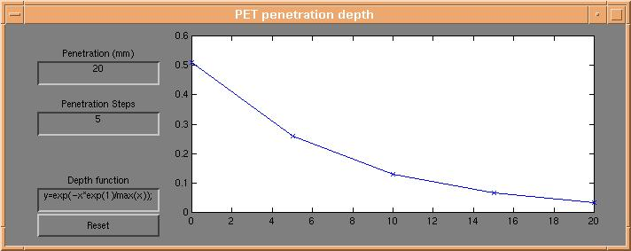
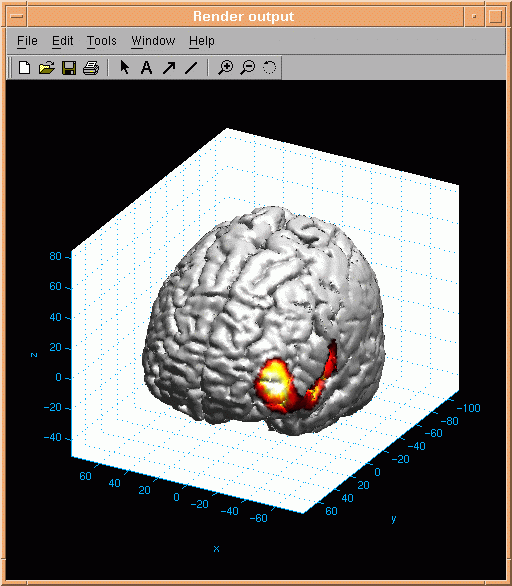
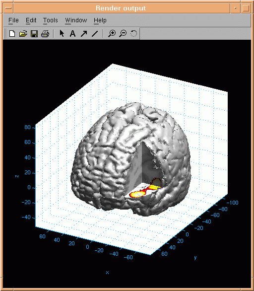
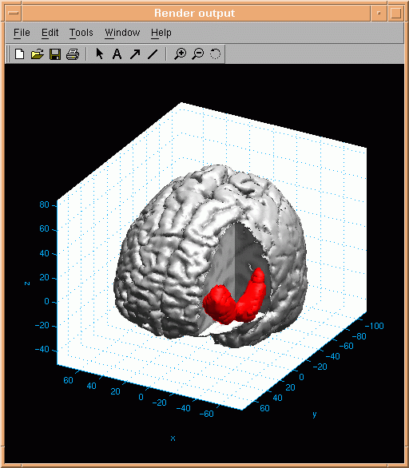

d3view Users tutorial (4): Understanding the imaging problem - activation
In this part of the tutorial we explain how functional activation data can be
presented on the anatomical 3d object defined in the previous
part of the tutorial.�
Let us imagine that an activation dataset coregistered with the anatomical dataset has
been loaded. In d3view, activation data can be added in three different but combinable ways.
Surface activation
Activation on the surface of the brain is controlled using the "PET penetration depth" dialog,
which appears by pressing the "Depth profile" button on the d3view control window.

Each point on the brain surface is coloured using a weighted average of the underlying
activation data. Any mathematical expression (in matlab syntax) can be used to
sample the underlying activation data across any number of points to any depth below the
brain surface.
Here is an example of the resulting surface activation:

Slice activation
If a part of the brain surface is selected invisible, the anatomical data are presented on the
three intersecting planes. Activation data can be presented on the resulting slices:

Blob activation
Activated areas of the brain can be visualized by selecting a certain activation threshold. Activation
above the selected threshold is encapsulated in so called activation blobs. An example of an activation
blob is presented here:

Parts of the brain surface must be selected invisible in order to reveal blob activation - in this case octant number 2
was selected invisible.
Next tutorial item: Rendering
Parameters.